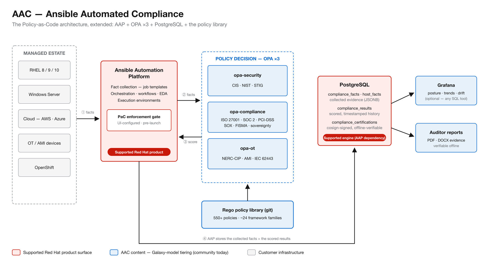

| Legacy / Industry Challenge | AAC Solution |
|---|---|
| Manual, Expensive Audits: Audit evidence relies on screenshots, spreadsheets, and interviews repeated every cycle. | Durable Records: Every assessment produces a durable, scored, cosign-signed record verifiable offline. |
| Tool Silos per Framework: CIS, STIG, NIST, ISO 27001, PCI-DSS, SOX, NERC-CIP, and IEC 62443 are operated separately. | Unified Engine: 50+ frameworks supported on one engine, using one language and one evidence store. |
| Unmonitored Drift: Nothing watches systems between audit cycles; unauthorized changes surface months later. | Continuous Baselining: Baselines configurations, detects unauthorized change, and tracks trend history. |
| Ungoverned Automation: Playbooks, Terraform plans, container images, and AI changes reach production unchecked. | Multi-Gate Enforcement: Gates changes at git check-in, runtime, and audit sweep. |
Supported Red Hat Product Feature: Generally Available (GA) in AAP 2.5.5; fully documented in AAP 2.5, 2.6, and 2.7.
OPA_HOST, OPA_PORT, TLS/auth, 1.5s timeout, 2 retries).User launches job
│
▼
AAP Controller builds job-context JSON
│
▼
OPA evaluates policy ───► POST /v1/data/<policy> [1.5s timeout]
│
▼
Returns Decision ───────► { "allowed": false, "violations": ["..."] }
│
├─► allowed ──► Job runs
└─► not allowed ──► Job blocked
AAC = PaC + 3 Domain OPA Instances + PostgreSQL Evidence DB.opa-security: CIS, NIST, STIGopa-compliance: ISO 27001, SOC 2, PCI-DSS, SOX, FISMA, Digital Sovereigntyopa-ot: NERC-CIP, AMI, IEC 62443/v1/data/<framework>/compliance_report.Managed Systems (RHEL / Windows / Cloud / OT / OpenShift)
│
▼
AAP job collects facts (~180 KB per system)
│
▼
OPA evaluates framework ───► POST /v1/data/<framework>/compliance_report
│ └─► Yields per-control results, scores, violations
▼
PostgreSQL stores row ───► Grafana dashboards
│ ───► PDF / DOCX auditor reports
▼
cosign-signed certification record (offline-verifiable)

Legend: Red Border = Supported Red Hat Product Surface | Blue Border = AAC Content Tier | Gray = Customer Infrastructure
| Capability / Attribute | Policy-as-Code (PaC) | Ansible Automated Compliance (AAC) |
|---|---|---|
| Engine / Language / API | OPA · Rego · v1 | OPA · Rego · v1 (Identical) |
| Invocation Point | Controller UI — Pre-launch gate | Playbooks — Post-fact collection |
| Evaluation Scope | Job metadata | Facts collected from the estate |
| OPA Instances | 1 (Customer-provided) | 3 (Domain-split) |
| Decision Persisted? | No — discarded post-launch | Yes — PostgreSQL, signed |
| Policy Content | Customer-written (12 examples) | 550+ policy library available |
| Blocks Non-Compliant Jobs | Yes — unbypassable launch gate | Yes — content-enforced |
| Inspects Playbooks / TF / K8s | No — structurally cannot | Yes |
| Proves Estate Compliance | No | Yes |
| Component | Covered? | Support Basis / Notes |
|---|---|---|
| RHEL | Yes | Standard product support |
| AAP (Controller, EEs, Templates) | Yes | Standard product support |
| PaC Enforcement Feature | Yes | Product feature, GA in AAP 2.5.5 |
| OPA Invocation from AAP | Yes | Productized PaC pattern |
| PostgreSQL Database | Yes | Supported as an AAP dependency engine |
| OPA Server Instances (x3) | No | Customer-provided infrastructure (same under PaC) |
| Rego Policy Library (550+) | No | Unsupported content (Subject to Galaxy tiering) |
| Playbooks / Delivery Layer | No | Platform-team / Customer owned content |
| Grafana Dashboards | No | Optional presentation layer (replaceable) |
Standard Support (Layers 1–3): AAP health → EE configuration → OPA network reachability.
Content Domain (Layers 4–7): Policies loaded → Framework resolution → PostgreSQL schema → Output accuracy.
Rego policy libraries follow the established Ansible Collections (Galaxy) model:
| Tier | Hosting Location | Support Level | Current AAC Status |
|---|---|---|---|
| Community | Ansible Galaxy / Git | Community-supported (No SLA / No Entitlement) | Current State (Public, Apache-2.0) |
| Validated | Automation Hub | Red Hat tested against matrix | Target Next Rung |
| Certified | Automation Hub | Full Red Hat Product Support with SLAs | Long-term Target |